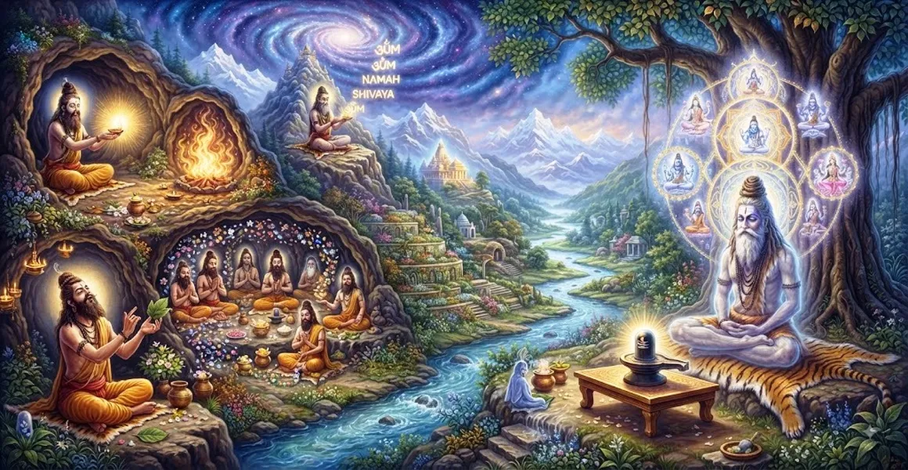

प्रणव के विवेचन की विधि
कैलाश संहिता का नौवां अध्याय पवित्र शब्दांश प्रणव (ओम), जो सृष्टि की मूल ध्वनि है, की गहन व्याख्या प्रदान करता है।
भगवान शिव बताते हैं कि बिंदु और नाद के साथ ए, यू, एम अक्षर कैसे ब्रह्मांडीय अभिव्यक्तियों का प्रतिनिधित्व करते हैं और साधक को परम मुक्ति की ओर ले जाते हैं।
यह अध्याय स्पष्ट करता है कि कैसे उच्चरित जप एक शांत आंतरिक प्रतिध्वनि में बदल जाता है, जो व्यक्तिगत चेतना को सर्वोच्च ब्रह्म के साथ जोड़ता है।
अध्याय 9 की मुख्य बातें
मौलिक ध्वनि
ओम को स्वयं-अस्तित्व वाले कंपन के रूप में व्याख्यायित करता है जिससे सभी शास्त्र और सृष्टि उत्पन्न होती है।
तीन मात्राएँ
सृजन, संरक्षण और विघटन के प्रतीकों के रूप में ए, यू और एम का विश्लेषण करता है।
बिंदु और नाडा
बिंदु (दिव्य बिंदु) और नाद (ब्रह्मांडीय प्रतिध्वनि) के उत्कृष्ट सूक्ष्म क्षेत्रों का खुलासा करता है।
अस्तित्व की चार अवस्थाएँ
प्रणव को जाग्रत (जाग्रत), स्वप्न देखना (स्वप्न), गहरी नींद (सुसुप्ति) और तुरीय अवस्था में मैप करता है।
जप और ध्यान
सांस की जागरूकता के साथ विलय करके निरंतर प्रणव पाठ के लिए सटीक तरीके प्रदान करता है।
ओम के माध्यम से मुक्ति
यह प्रदर्शित करता है कि प्रणव में स्थिर अवशोषण किस प्रकार शिव की प्रत्यक्ष प्राप्ति कराता है।
इस अध्याय में मुख्य विषय
ए, यू और एम का विश्लेषण
'ए' अक्षर सृष्टि पहलू का प्रतिनिधित्व करता है, जो भगवान ब्रह्मा और जागृत अवस्था (जागृत) से जुड़ा है।
'यू' संरक्षण को दर्शाता है, जो भगवान विष्णु और स्वप्न अवस्था (स्वप्न) से जुड़ा है, जबकि 'एम' भगवान रुद्र के तहत विघटन और गहरी नींद (सुसुप्ति) को दर्शाता है।
बिन्दु, नाद और तुरिया का रहस्य
तीन ध्वनिक घटकों से परे बिंदु और नाद हैं, जो भौतिक वाणी से परे हैं और शुद्ध प्रकाश और अव्यक्त कंपन का प्रतिनिधित्व करते हैं।
ये उच्च चरण तुरीय से मेल खाते हैं, जो जागने, सपने देखने और गहरी नींद से परे चेतना की चौथी अवस्था है।
सूक्ष्म जगत् और स्थूल जगत् संरेखण
अध्याय दिखाता है कि कैसे मानव शरीर और दिमाग का प्रत्येक तत्व प्रणव की संरचना को प्रतिबिंबित करता है।
ओम का चिंतन करके, अभ्यासकर्ता व्यक्तिगत महत्वपूर्ण शक्तियों को सार्वभौमिक ब्रह्मांडीय लय के साथ सामंजस्य स्थापित करता है।
चेतना को परम शिव में विलीन करना
जैसे ही ओम का गूंजता हुआ कंपन शुद्ध मौन में शांत हो जाता है, व्यक्तिगत अहंकार पूरी तरह से विलीन हो जाता है।
अभ्यासकर्ता शुद्ध, स्व-प्रकाशमान चेतना के रूप में रहता है, जीवित रहते हुए मुक्ति (जीवनमुक्ति) का अनुभव करता है।
अध्याय 10 की ओर
अध्याय 9 में प्रणव के उच्चतम आध्यात्मिक सत्य को उजागर करने के बाद, शास्त्र अध्याय 10, 'सुता के निर्देश' में बदल जाता है।
अध्याय 10 में ऋषि सूता इन शिक्षाओं को दैनिक आध्यात्मिक जीवन में एकीकृत करने के लिए अंतिम सारांश, नैतिक निर्देश और व्यावहारिक ज्ञान प्रदान करते हैं।
अध्याय 9 की मुख्य शिक्षाएँ
वेदों का सार
प्रणव सभी पवित्र ज्ञान और वैदिक ज्ञान का केंद्रित बीज है।
ब्रह्मांडीय त्रय
ए-यू-एम शिव के अंतर्गत एकीकृत निर्माण, संरक्षण और विघटन का प्रतिनिधित्व करता है।
उत्कृष्ट मौन
भौतिक ध्वनि से परे ओम का शांत क्षेत्र है, जो तुरीय अवस्था की ओर ले जाता है।
साँसों का सामंजस्य
नियंत्रित सांस के साथ ओम का जाप सूक्ष्म ऊर्जा चैनलों (नाड़ियों) को संतुलित करता है।
अहंकार का विघटन
नाद पर ध्यान केंद्रित करने से मानसिक झिझक और सांसारिक मोह समाप्त हो जाता है।
प्रत्यक्ष बोध
प्रणव साधना आत्म-साक्षात्कार और शिवत्व का सीधा मार्ग है।
आध्यात्मिक चिंतन
प्रणव केवल बोलने वाला शब्द नहीं है; यह अस्तित्व का मूलभूत कंपन है। ओम का जाप करते समय, मन को शांत करके आने वाली शांति को सुनें, क्योंकि उस शांति में शिव की शाश्वत उपस्थिति रहती है।
अध्याय 9 का संदेश जीना
प्रत्येक दिन की शुरुआत ओम के शांत जाप से करें, अपनी छाती के भीतर गूंजने वाले कंपन पर ध्यान केंद्रित करें।
श्वास चक्रों के बीच मौन विराम को तुरीय जागरूकता में प्रवेश बिंदु के रूप में देखें।
याद रखें कि सभी सांसारिक शोर के पीछे प्रणव की अपरिवर्तनीय, शांतिपूर्ण ध्वनि निहित है।
प्रमुख आध्यात्मिक अवधारणाएँ
पवित्र शब्दांश ओम, सभी मंत्रों की मौलिक ध्वनि और मैट्रिक्स माना जाता है।
तीन घटक ध्वन्यात्मक घटक सृजन, संरक्षण और विनाश का प्रतिनिधित्व करते हैं।
पवित्र ध्वनि के भीतर दिव्य चेतना और शक्ति का केंद्रित बिंदु।
सूक्ष्म, अव्यक्त आंतरिक ध्वनिक प्रतिध्वनि जो परम शिव की ओर ले जाती है।
जाग्रत, स्वप्न और सुषुप्ति से परे शुद्ध चेतना की उत्कृष्ट चौथी अवस्था।
प्रणव में गहरी ध्यानमग्नता के दौरान आंतरिक रूप से सुनाई देने वाली अस्फुट ध्वनि।
अध्याय सारांश
कैलाश संहिता अध्याय 9 पवित्र प्रणव (ओम) की गहन व्याख्या प्रस्तुत करता है। यह इसके घटक तत्वों - ए, यू, एम, बिंदु और नाद - को तोड़ता है और उन्हें शिव के ब्रह्मांडीय कार्यों, चेतना की स्थितियों और दिव्य अभिव्यक्तियों से जोड़ता है। अध्याय में सांस के साथ तालमेल बिठाकर ओम का जाप करने की ध्यान संबंधी तकनीकों का विवरण दिया गया है, जो अभ्यासकर्ता को मानसिक बातचीत को शांत करने, द्वंद्वों को पार करने और अध्याय 10, 'सुता के निर्देश' में निर्बाध रूप से परिवर्तन करने की अनुमति देता है।
अक्सर पूछे जाने वाले प्रश्न
1. कैलास संहिता अध्याय 9 का प्राथमिक विषय क्या है?
अध्याय 9 प्रणव (ओम) की विस्तृत व्याख्या करता है, इसके घटक मात्राओं (ए, यू, एम, बिंदू, नाद) और शिव और ब्रह्मांडीय रचना के साथ उनके संबंध का विश्लेषण करता है।
2. प्रणव में ए, यू और एम घटक क्या दर्शाते हैं?
ए, यू और एम ब्रह्मा, विष्णु और रुद्र के अनुरूप सृजन, संरक्षण और विघटन के लौकिक कार्यों का प्रतिनिधित्व करते हैं, जो सभी सर्वोच्च शिव से उत्पन्न हुए हैं।
3. प्रणव ध्यान में बिंदु और नाद का क्या महत्व है?
बिंदु केंद्रित दिव्य ऊर्जा और चेतना का प्रतीक है, जबकि नाद अव्यक्त पारलौकिक ध्वनि का प्रतिनिधित्व करता है जो सीधे पूर्ण वास्तविकता की ओर ले जाती है।
4. प्रणव ध्यान कैसे मुक्ति की ओर ले जाता है?
ओम की सूक्ष्म ध्वनि का चिंतन व्यक्तिगत जागरूकता को अव्यक्त मौलिक कंपन में विलीन कर देता है, अज्ञानता को दूर करता है और ब्रह्म के साथ पहचान को प्रकट करता है।
5. अध्याय 9 अध्याय 10 में कैसे परिवर्तित होता है?
अध्याय 9 में ओम की गूढ़ व्याख्या के बाद, पाठ अध्याय 10 ('सुता का निर्देश') में बदल जाता है, जहां ऋषि सुता ऋषियों को अंतिम निष्कर्ष ज्ञान प्रदान करते हैं।
6. कैलास संहिता के अनुसार प्रणव का चिंतन करने के लिए कौन योग्य है?
तपस्वी और निष्ठावान साधक जिन्होंने अनुष्ठान और मानसिक पूजा के पिछले चरणों के माध्यम से अपने मन को शुद्ध कर लिया है, वे प्रणव चिंतन का अभ्यास करने के लिए योग्य हैं।
"आदि में ओम था, और ओम में परम शिव की असीम शांति निवास करती है।"
कैलाश संहिता के माध्यम से जारी रखें
अध्याय 9 प्रणव की व्याख्या करने के तरीके का विवरण देता है। अध्याय 10, सुता के निर्देश को जारी रखें।